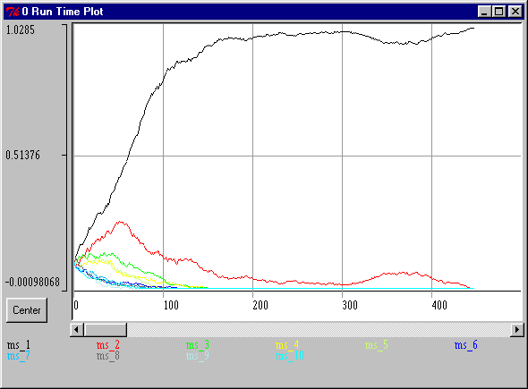
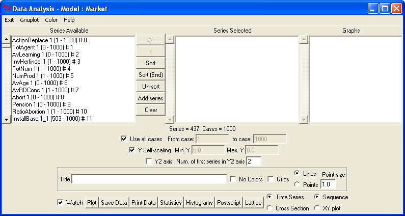
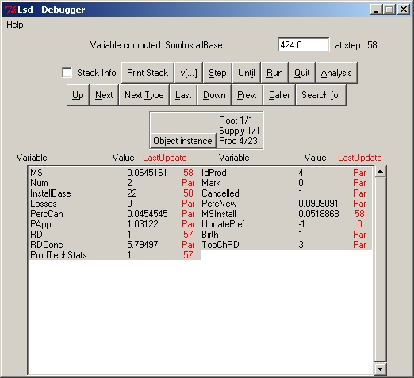

|
The Browser window shows the content of
one object of the model and functions as control center to give commands
to the system. Clicking on the object labels move the browser to that object.
Clicking on the variables' labels allow the setting of options. |
 |
When a model is loaded, a window provides a graphical
representation of the model, and provides shortcuts to move the browser
to that object. |
|
|
|
|
 |
The Log window contains the messages from the
system to the user (e.g. error messages) and allows the control during
a simulation run, like activating the debugger or aborting the simulation. |
 |
A run time plot is the time series graph
of the values from some selected variables, plotted during a run. Variables
to appear in the run time plot must be set before the simulation starts. |
|  |
The module analysis of results allows to
plot time-series and cross-section graphs from the variables saved, obtain
few descriptive statistics, and export data for all the values saved during
previous simulation runs. Series available are only the ones selected before
starting a run. |
 |
The Debugger window, shows the content of
the model object-by-object. Can be used during a simulation run, before
or after to inspect the status of the model. Using this interfaces It is
possible to modify any value of the model. |
 |
Windows showing the equations' code. These
windows report the cannot be used to modify the equations. Use LMM
for this purpose. |
|
|